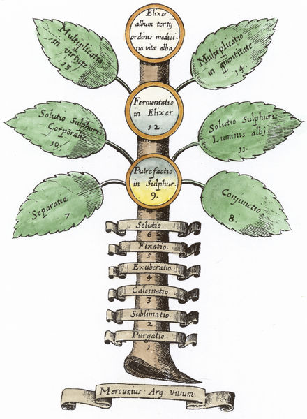

A few findings to report
No biographer appears to have yet noticed that Samuel was the Great-Great Grandson of the Queen of England, Elizabeth Woodville, and 1st cousin of Queen of England and Ireland, Lady Jane Grey.
Nor have the noticed that Norton died in 1617; the date most often quoted is 1621--this is the year his will was proved rather than the year of his passing. Other researchers have apparently missed record C 142/413/67 in the National Archives, the Inquisition Post Mortem of our Norton, clearly identifiable thanks to mention of his brother, George, and the manor at Abbotsleigh. This is also attested to by the records of the Somerset Heritage centre. The Latest mention of Norton is in a session roll of 1616; he requested a pension, and then never appears (alive) in the archival record again.